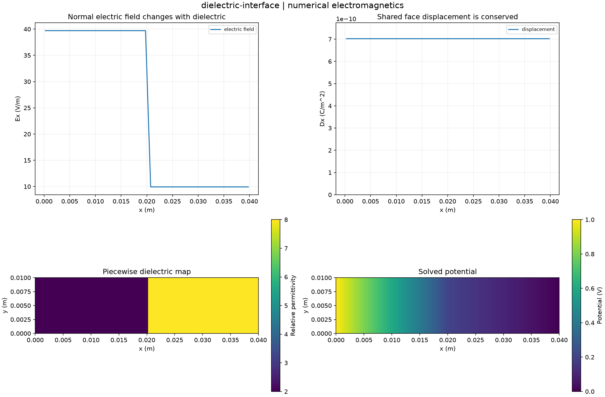

Reproducible numerical electromagnetics. Units and field components are printed on the scientific axes. Peak phasors use exp(+i omega t); outgoing waves use exp(-i k r).
Sealed numeric archive | Summary CSV | Physical parameters | Run request | Source and environment

| charge_capacitance_f_m | 7.0306206005258455e-12 |
|---|---|
| discrete_series_reference_f_m | 7.0306206005275895e-12 |
| energy_capacitance_f_m | 7.030620600525727e-12 |
| relative_displacement_variation | 5.08265265510224e-13 |
These are simulations, not hardware measurements. Mesh, boundary, truncation and statistical uncertainty require distinct convergence checks. Singular or unilluminated data use explicit masks.
Source revision: 255b9ec965941d1fc97a04b9f7e2101e959fbeca.
Dirty checkout: False.
Configuration SHA-256: e59b226233905c2eb633758bab5ce8113ed3da0ac31b62e88bd884efb5cdcc96.
Replay preserves original source and parameter provenance. SHA-256 manifests detect changed bytes; they are unsigned integrity records, not certificates of physical validity.